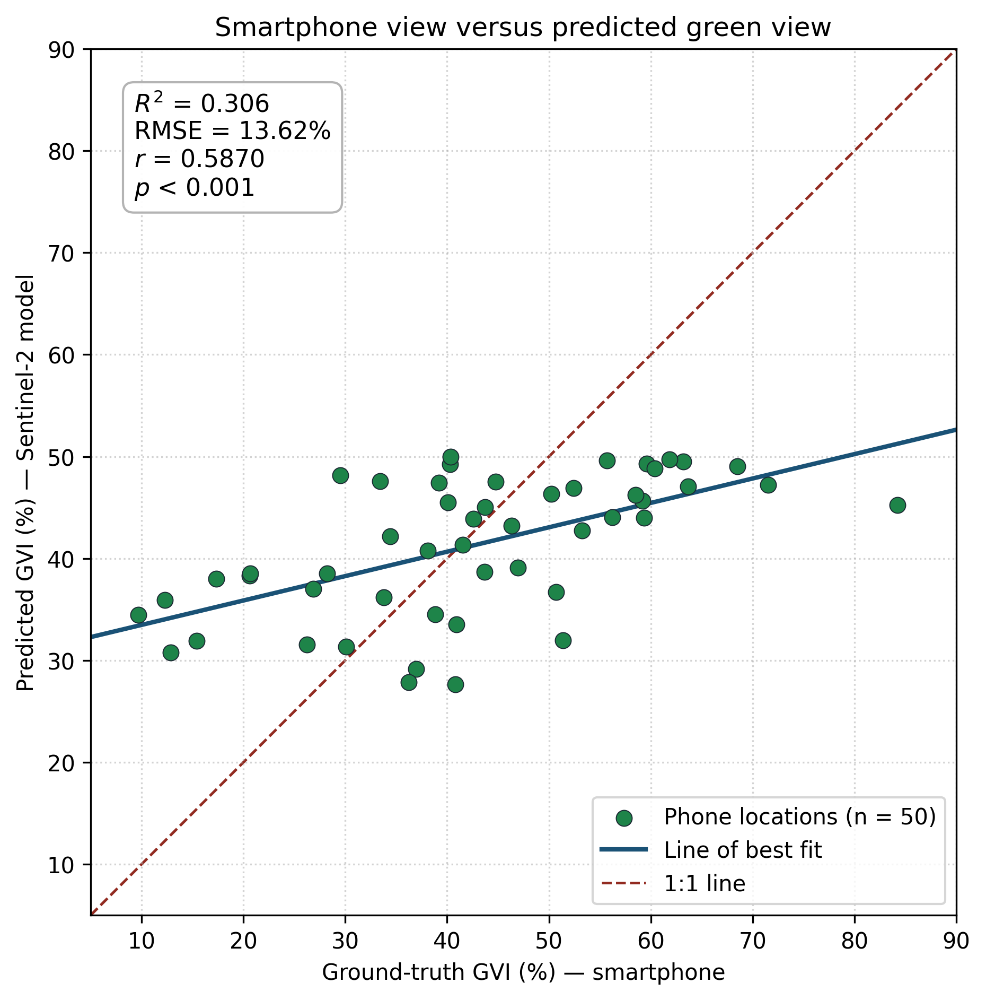
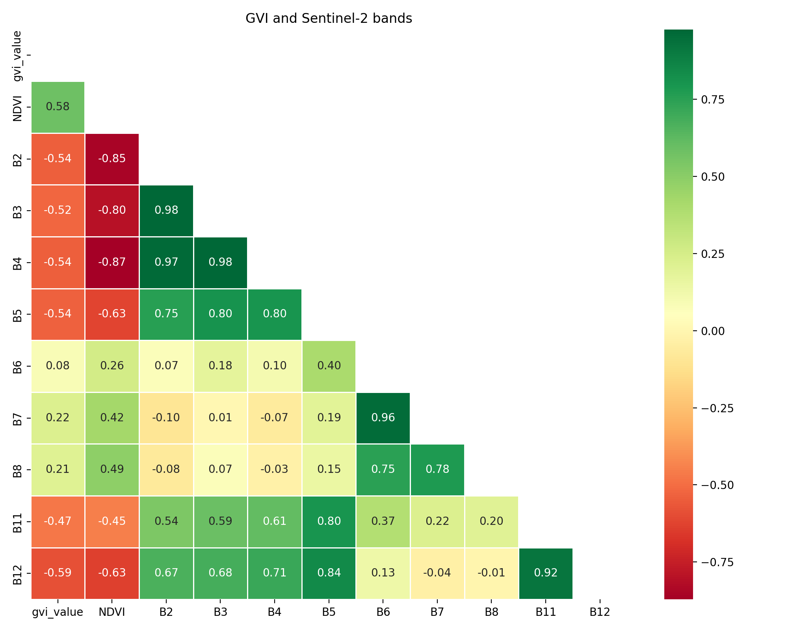
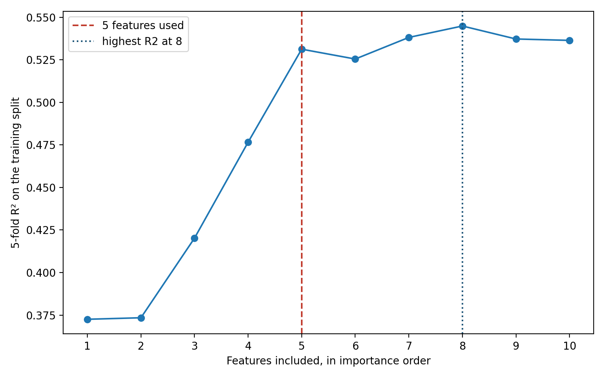

Street-level greenery from Google Street View, and a Sentinel-2 model that estimates it on a 10 m grid. The background is Mapbox Streets. Each map has a layer control: turn a layer off to see the streets underneath.
The numeric prediction table is campus_gvi_prediction.csv. Model tables are in the saved outputs of gvi_fromgsv.ipynb.
Fifty smartphone locations, each matched to the nearest 10 m prediction. The line of best fit rises with the phone measurement. The 1:1 line shows that the model compresses the range: phone GVI runs from about 10% to 84%, while the predictions stay near 30–50%.

The 50 pairs are in ground_truth_vs_predicted.csv. The 220 original phone photos are in the Taken folder on Google Drive.

